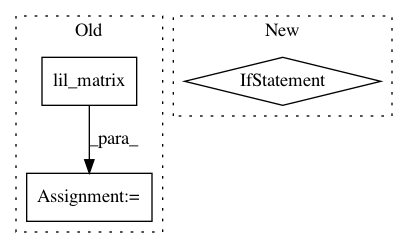

108925e377867296d0a816d14540d59bc4f0c618,hicexplorer/hicTransform.py,,main,#Any#,108
Before Change
trasf_matrix = lil_matrix(hic_ma.matrix.shape)
if args.method == "obs_exp_norm":
trasf_matrix = lil_matrix(hic_ma.matrix.shape)
if args.perChromosome:
for chrname in hic_ma.getChrNames():
chr_range = hic_ma.getChrBinRange(chrname)
submatrix = hic_ma.matrix[chr_range[0]:chr_range[1], chr_range[0]:chr_range[1]]
After Change
log.error("Accepted is .h5 or .cool")
exit(1)
if args.matrix.endswith("cool") and args.chromosomes is not None and len(args.chromosomes) == 1:
hic_ma = hm.hiCMatrix(pMatrixFile=args.matrix, pChrnameList=args.chromosomes)
else:
hic_ma = hm.hiCMatrix(pMatrixFile=args.matrix)
if args.chromosomes:
hic_ma.keepOnlyTheseChr(args.chromosomes)
trasf_matrix = lil_matrix(hic_ma.matrix.shape)
if args.method == "obs_exp_norm":
// trasf_matrix = lil_matrix(hic_ma.matrix.shape)
In pattern: SUPERPATTERN
Frequency: 3
Non-data size: 3
Instances
Project Name: deeptools/HiCExplorer
Commit Name: 108925e377867296d0a816d14540d59bc4f0c618
Time: 2018-12-04
Author: wolffj@informatik.uni-freiburg.de
File Name: hicexplorer/hicTransform.py
Class Name:
Method Name: main
Project Name: stellargraph/stellargraph
Commit Name: 9f9a07de2499c47a0ba9b78675880c17c42d714f
Time: 2020-03-18
Author: Huon.Wilson@data61.csiro.au
File Name: stellargraph/mapper/mini_batch_node_generators.py
Class Name: ClusterNodeSequence
Method Name: __getitem__
Project Name: stellargraph/stellargraph
Commit Name: 98611fa50a2929757207121f440dad6651265e47
Time: 2019-06-24
Author: andrew.docherty@data61.csiro.au
File Name: stellargraph/utils/saliency_maps/saliency.py
Class Name: GradientSaliency
Method Name: get_link_masks